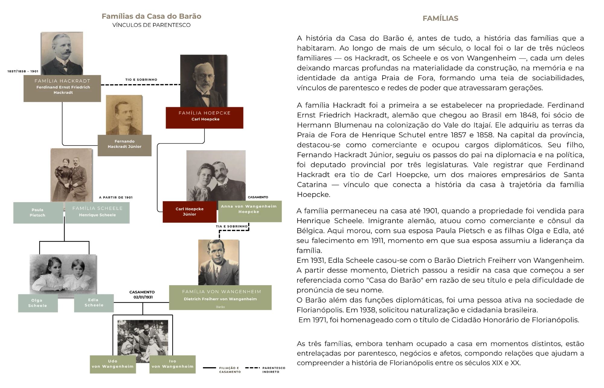
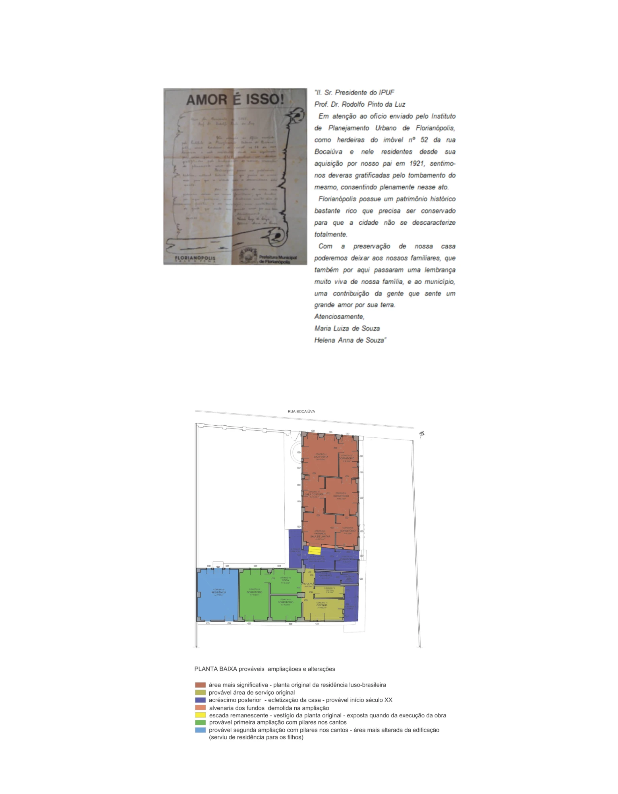

História
Da Praia de Fora ao Centro Cultural
Residência, consulado e centro de sociabilidade: a trajetória de uma casa que se confunde com a da própria cidade.
O bairro
Praia de Fora: o bairro idílico construído e povoado a muitas mãos
Entre laranjeiras, orquídeas, bananeiras e milharais, estendia-se a região conhecida como Praia de Fora. O nome nasce da localização afastada da antiga Praça da Igreja Matriz, o atual Largo da Catedral junto à Praça XV de Novembro: como as pessoas se locomoviam a pé, de charrete ou a cavalo, e o caminho ficava do lado oposto à Praia da Vila, o local era reconhecido como praia "de fora".
No século XIX, o antigo bairro era procurado pelas famílias de maiores posses para fugir das epidemias que assolavam as áreas centrais. Distantes do aglomerado urbano, as chácaras da região se caracterizavam por grandes extensões de terra, organizadas para atividades domésticas em detrimento das atividades produtivas. As residências possuíam padrões arquitetônicos urbanos, com grandes áreas verdes, criação de animais, como cavalos, porcos, galinhas e vacas; cultivo de hortas, ervas medicinais, uma grande variedade de flores e frutas, tudo para abastecimento familiar com comercialização de possível excedente.
A partir da década de 1960, a Praia de Fora foi progressivamente urbanizada e aterrada. Na de 1970, o segundo aterro implantou a Avenida Beira-Mar Norte, que alterou drasticamente a paisagem bucólica. Altos prédios começaram a ser erguidos. Lotes à beira-mar passaram a ter maior valor de mercado. O objetivo era facilitar a movimentação de carros entre o centro e outras regiões da cidade. Na década de 1990, ampliou-se a estrutura para pedestres, estacionamentos, semáforos e arborização.
A região, antes ligada ao uso residencial, permanece com conotação elitizada, mas hoje com funções turísticas, comerciais e de lazer. E, apesar das modificações ao longo das décadas, eternizou, por meio de ações de salvaguarda, construções centenárias, como a Casa do Barão e a Casa Bocaiuva.
A edificação
A Casa
A história desta edificação confunde-se com a própria trajetória da antiga Praia de Fora. A data exata de sua construção permanece incerta, mas a propriedade já é referenciada em pinturas e gravuras da década de 1860, que a retratam como um imponente consulado em Nossa Senhora do Desterro, aparecendo também em mapa elaborado pelo Visconde de Taunay em 1876.
Sobre o início da propriedade, Veiga (2019) sugere a família Livramento como a primeira dona do terreno; já documentos recentemente encontrados no Arquivo Municipal de Florianópolis atestam que a família Hackradt adquiriu as terras de Henrique Schutel entre 1857 e 1858. Essas narrativas revelam a complexidade em se estabelecer uma cronologia linear para a propriedade, que, ao longo de mais de um século, foi residência, consulado e centro de sociabilidade da elite catarinense.
Do ponto de vista arquitetônico, a Casa do Barão destaca-se como um dos mais significativos exemplares do estilo eclético em Florianópolis, mesclando influências germânicas e francesas com soluções românticas, combinação proveniente das constantes reformas realizadas ao longo das décadas. O conjunto ostenta rica ornamentação, colunas elegantes e leves, lambrequins, elementos de art nouveau e detalhes metálicos rendilhados.
Quem viveu aqui
Famílias
A história da Casa do Barão é, antes de tudo, a história das famílias que a habitaram. Ao longo de mais de um século, o local foi o lar de três núcleos familiares (os Hackradt, os Scheele e os von Wangenheim), cada um deles deixando marcas profundas na materialidade da construção, na memória e na identidade da antiga Praia de Fora, formando uma teia de sociabilidades, vínculos de parentesco e redes de poder que atravessaram gerações.
Hackradt
A família Hackradt foi a primeira a se estabelecer na propriedade. Ferdinand Ernst Friedrich Hackradt, alemão que chegou ao Brasil em 1848, foi sócio de Hermann Blumenau na colonização do Vale do Itajaí. Ele adquiriu as terras da Praia de Fora de Henrique Schutel entre 1857 e 1858. Na capital da província, destacou-se como comerciante e ocupou cargos diplomáticos. Seu filho, Fernando Hackradt Júnior, seguiu os passos do pai na diplomacia e na política, foi deputado provincial por três legislaturas. Vale registrar que Ferdinand Hackradt era tio de Carl Hoepcke, um dos maiores empresários de Santa Catarina, vínculo que conecta a história da casa à trajetória da família Hoepcke.
Scheele
A família permaneceu na casa até 1901, quando a propriedade foi vendida para Henrique Scheele. Imigrante alemão, atuou como comerciante e cônsul da Bélgica. Aqui morou, com sua esposa Paula Pietsch e as filhas Olga e Edla, até seu falecimento em 1911, momento em que sua esposa assumiu a liderança da família.
von Wangenheim
Em 1931, Edla Scheele casou-se com o Barão Dietrich Freiherr von Wangenheim. A partir desse momento, Dietrich passou a residir na casa, que começou a ser referenciada como "Casa do Barão" em razão de seu título e pela dificuldade de pronúncia de seu nome.
O Barão, além das funções diplomáticas, foi uma pessoa ativa na sociedade de Florianópolis. Em 1938, solicitou naturalização e cidadania brasileira. Em 1971, foi homenageado com o título de Cidadão Honorário de Florianópolis.
As três famílias, embora tenham ocupado a casa em momentos distintos, estão entrelaçadas por parentesco, negócios e afetos, compondo relações que ajudam a compreender a história de Florianópolis entre os séculos XIX e XX.

Vínculos de parentesco entre as famílias da Casa do Barão.
Diplomacia
Consulado
É sabido que a edificação anexa à Casa funcionou como consulado desde os seus primórdios, porém a data que marcou o início dessa tradição é incerta.
A pintura de Joseph Brüggemann datada de 1866 apresenta a bandeira da Suíça hasteada em frente ao anexo da casa, data em que a casa era habitada pela família Hackradt e Ferdinand estava à frente do referido consulado. Porém, cabe destacar que sua atuação diplomática em Santa Catarina remonta a anos anteriores, conforme achados dos anos de 1856 e 1857; com isso, a casa pode ter sido sede consular anos antes.
Ao longo das décadas seguintes, a representatividade diplomática de Ferdinand Hackradt se expandiu, e o local abrigou delegações de diversas outras nações. Seguindo os passos de seu pai, Fernando Hackradt Júnior também desempenhou um papel significativo na diplomacia local.
Com a venda da propriedade para Henrique Scheele, a tradição consular da casa foi mantida. Henrique atuou como Cônsul da Bélgica, como registrado no Almanak Laemmert de 1901. Sua atuação como presidente do Clube Germânia, conforme noticiado em jornais da época, evidencia sua inserção na elite e no papel de liderança na comunidade teuto-brasileira de Florianópolis.
A era von Wangenheim marcou o período de maior projeção social e diplomática da Casa. O Barão exerceu função diplomática entre as décadas de 1930 e 1970. Após o falecimento do Barão, seu filho, Udo von Wangenheim, também serviu como cônsul.
A Casa, portanto, manteve-se como um espaço de sociabilidade diplomática, recebendo viajantes e negociantes estrangeiros e sendo ponto de referência para os interesses comerciais e políticos das nações representadas.
Nunca é tarde para voltar
Gradil da Casa do Barão: entre narrativas europeias e africanas
Merece destaque o gradil do muro fronteiro à construção, já presente, inclusive, na gravura datada de 1879, período em que a escravidão ainda era legalizada. De acordo com o documento elaborado pelo IPUF, intitulado Justificativa Histórica, artística e natural para Tombamento da Rua Bocaiuva, afirma-se que o gradil e os caramanchões do muro fronteiro à construção são provenientes da Europa. Na mesma toada, Eliane Veiga afirma que “muros gradeados e gazebos em ferro, produzidos na Europa, contornam as esquinas e chamam a atenção até os dias de hoje” (Veiga, 2019, p. 169).
Contudo, a origem europeia dessas grades não é um fato histórico dado. Não há fontes documentais primárias e incontestáveis ou registros materiais que sustentem definitivamente essa afirmação. A atribuição de autoria e proveniência ao continente europeu costuma operar, muitas vezes, como parte da narrativa histórica hegemônica, silenciando outras possibilidades de produção e leitura. Independentemente de a peça ter sido encomendada no exterior ou produzida em solo nacional, o desenho delineado no metal não é algo incomum nos lares brasileiros: na verdade, facilmente encontramos esses mesmos símbolos compondo portões, grades e janelas de ferro de forma disseminada. Como explicado pelo Museu das Minas e do Metal, de Belo Horizonte, muitas vezes este formato é relacionado ao de um ideograma africano chamado Sankofa, originário dos povos Akan e que pertence a um conjunto de símbolos chamado Adinkra. O museu ainda enfatiza a tradição ferreira africana como uma das precursoras no manuseio metalúrgico em solo brasileiro.
O ideograma Sankofa, além da forma geométrica com volutas espelhadas como aparece no muro da Casa do Barão, também costuma ser representado por um pássaro com a cabeça voltada para trás. De acordo com a socióloga Elisa Larkin Nascimento (2008, p. 32), o significado do Sankofa pode ser traduzido ao português como “nunca é tarde para voltar e apanhar aquilo que ficou para trás”.
Com isso, a análise da grade a partir do Sankofa transcende a necessidade de atestar o seu local exato de fabricação. Independentemente de a peça ter sido importada da Europa ou produzida por mãos escravizadas no Brasil, não podemos descartar a possibilidade da qual o seu padrão estético remete a conhecimentos e a formas de fazer que, costumeiramente no Brasil, possuem um referencial da cultura africana.

Gravura retratando o edifício como consulado alemão (1879). Fonte: jornal Über Land und Meer, n. 51, outubro de 1878-1879.
O que poderia ter sido
Futuros possíveis do passado: o que imaginaram para a Casa do Barão?
Toda pessoa é capaz de imaginar futuros a partir do seu presente. Com a Casa do Barão não foi diferente: aqueles que tiveram alguma ligação ou intenção com a propriedade também nutriam projeções, opiniões e planos para ela. A partir das expectativas sobre a venda da casa pela família von Wangenheim, esses futuros foram tomando forma. A edificação poderia ter seguido muitos caminhos: ter se tornado um hotel cinco estrelas, uma cafeteria com café colonial ou até mesmo uma loja de varejo. Cada proposta revela não apenas o desejo de seus proponentes, mas também as tensões entre preservação e desenvolvimento que marcaram a trajetória do imóvel.
Em 1984, a Caixa Econômica Federal já havia demonstrado interesse na instalação de uma agência bancária, conforme documentos do IPUF/SEPHAN. No histórico do processo de tombamento, também é mencionado o interesse do Sr. Roland Peters, empresário de Camboriú, em instalar um hotel que pretendia gerar 300 empregos. Houve também uma sugestão de que o casarão fosse utilizado como café colonial.
Outras propostas também marcaram esse período de incertezas. Houve a intenção, por parte da construtora Planel, de uma alteração brusca na coloração da Casa. A então proprietária encaminhou solicitação para utilizar a cor vermelha na edificação, o que foi negado pelo IPUF, que ordenou que fossem respeitadas as relações entre cor clara e escura conforme existentes nos ornamentos e elementos arquitetônicos da casa. A consulta de viabilidade para uso do imóvel da “Rua Bocaiúva nº 42”, identificada no parecer técnico de agosto de 1994, apontou solicitações de usos como museu, setor comercial e telefonia celular. Já em novembro de 2000, a Jaime Aleixo Empreendimentos manifestou o interesse de instalar um quiosque nos jardins e um comércio varejista no local.
A imprensa também acompanhou de perto esses futuros em disputa. Destacou a preocupação dos ecologistas com os jardins e as palmeiras, além de alertar em relação à proteção do patrimônio cultural.
Todos esses futuros possíveis, da agência bancária ao hotel de luxo, do café colonial ao quiosque nos jardins, revelam a complexidade das relações entre a Casa do Barão, a cidade e o patrimônio. Se hoje a edificação integra o Centro Cultural do Ministério Público de Santa Catarina é porque, em algum momento, a sociedade e os órgãos de preservação optaram por um futuro que conciliasse memória e uso contemporâneo. O tombamento em 1986 não encerrou as disputas, mas abriu um novo capítulo: o da preservação como escolha coletiva, em meio a tantos outros caminhos que a casa poderia ter trilhado.
Preservação
Do tombamento ao Centro Cultural do MPSC
O ano de 1986 é um marco para a preservação da Casa do Barão e da Casa Bocaiuva. Em dezembro, são tombadas pelo Decreto Municipal n. 270/86, integrando o Conjunto Arquitetônico Praia de Fora. O tombamento, no entanto, restringiu-se às fachadas, à cobertura e à volumetria, permitindo alterações internas.
No que concerne à Casa do Barão, após inúmeras possibilidades, foi vendida para fazer parte de um novo complexo, o Centro Executivo Casa do Barão. O projeto, aprovado em 1989, integrou e recuperou a casa principal, o anexo e o jardim histórico.
Posteriormente, o conjunto foi alugado para a instalação de uma agência do Banco Itaú. Com o interior liberado para adaptações, o banco passou a usar o pavimento térreo da casa principal para atendimento ao público e a edificação anexa para a área de funcionários.
Ao longo das décadas, foram retirados os pisos de madeira e instalados pisos cerâmicos, trocados forros, e diversos outros itens que garantiram o funcionamento da agência, mas que encobriram ou alteraram parte dos ambientes internos originais.
A trajetória da Casa após o tombamento revela uma tensão produtiva entre preservação e uso. Se, por um lado, a ocupação pelo Banco Itaú ajudou a manter o casarão vivo e conservado, justificando a necessidade de conservação contínua, por outro, as adaptações acumuladas introduziram elementos que demandaram revisão e, em alguns casos, reversão.
Em 2022, o imóvel foi adquirido pelo Ministério Público de Santa Catarina. Após ser utilizado por áreas administrativas, a Casa do Barão iniciou um novo capítulo: a implantação do Centro Cultural do MPSC, com obra concluída em 2026.
Este projeto mantém viva sua importância para a memória da cidade e garante que a Casa permaneça legível e significativa para as futuras gerações.
A casa vizinha
Casa Bocaiuva
Construção luso-brasileira de meados do século XIX, tombada em 1986 com a Casa do Barão. Adquirida pelo MPSC em 2013, foi restaurada e entregue em 2018.
“Com a preservação de nossa casa poderemos deixar aos nossos familiares, que também por aqui passaram, uma lembrança muito viva de nossa família, e ao município, uma contribuição da gente que sente um grande amor por sua terra.”

Planta baixa com as prováveis ampliações e alterações. Em vermelho, a área mais significativa: a planta original da residência luso-brasileira.
Cronologia
Linha do tempo
- 1857
A família Hackradt adquire terras na Praia de Fora e exerce funções consulares até a década de 1880.
- 1866
Pintura de Joseph Brüggemann retrata a propriedade com a bandeira suíça hasteada, evidenciando sua função consular.
- 1901
Fernando Hackradt Júnior vende a propriedade para Henrique Scheele. O novo proprietário exerce a função de Cônsul da Bélgica, conforme registrado no Almanak Laemmert. A casa mantém a tradição consular.
- 1905
Nasce Edla Scheele, filha de Henrique Scheele e Paula Pietsch (2 de novembro).
- 1911
Falece Henrique Scheele. A propriedade é herdada por Paula Scheele e suas filhas, Olga e Edla.
- 1924
Dietrich von Wangenheim chega a Florianópolis para assumir cargo na diretoria da empresa Hoepcke.
- 1931
Casamento de Edla e Dietrich.
- 1932
De 1932 a 1948, Dietrich von Wangenheim exerce a função de Cônsul dos Países Baixos.
- 1940
Edla filma a visita do presidente Getúlio Vargas a Florianópolis para a inauguração da Colônia Santa Teresa.
- 1966
Dietrich von Wangenheim exerce a função de Cônsul da Alemanha.
- 1970
Desapropriação de parte do terreno do Barão para a construção da Emergência do atual Hospital Celso Ramos.
- 1974
Falece o Barão Dietrich von Wangenheim, no dia 19 de março.
- 1986
A Casa do Barão é tombada pelo Decreto Municipal n. 270/86 (30 de dezembro), integrando o Conjunto Arquitetônico Praia de Fora.
- 1998
Falece Edla, deixando um acervo fotográfico e audiovisual que registra a Florianópolis das décadas de 1920 a 1940.
- 2008
É elaborado o projeto arquitetônico para reformar a agência do Banco Itaú e readequá-la ao novo padrão da rede bancária, pela Estel Engenharia e com aprovação do SEPHAN.
- 2013
O MPSC adquire a Casa Bocaiuva.
- 2018
A Casa Bocaiuva é entregue restaurada.
- 2019
O Banco Itaú desocupa o imóvel.
- 2022
O Ministério Público de Santa Catarina (MPSC) adquire a propriedade com o objetivo de sediar o Centro Cultural da instituição.
- 2025
O MPSC dá início ao projeto de requalificação da Casa do Barão e da Casa Bocaiuva para implantação do Centro Cultural, conciliando preservação do patrimônio histórico e uso cultural contemporâneo, com elaboração de Plano Museológico e ações de acessibilidade, educação e difusão.
- 2026
Concluída a obra, o Centro Cultural abre ao público com a exposição inaugural, em dezembro.